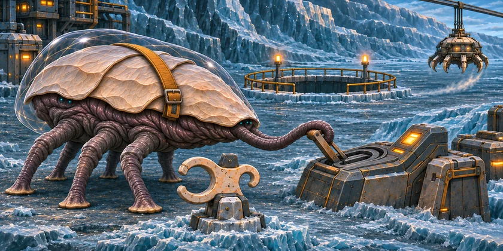
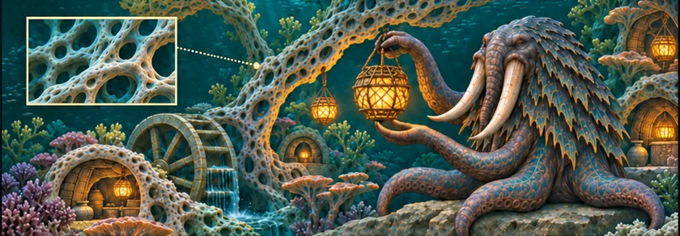
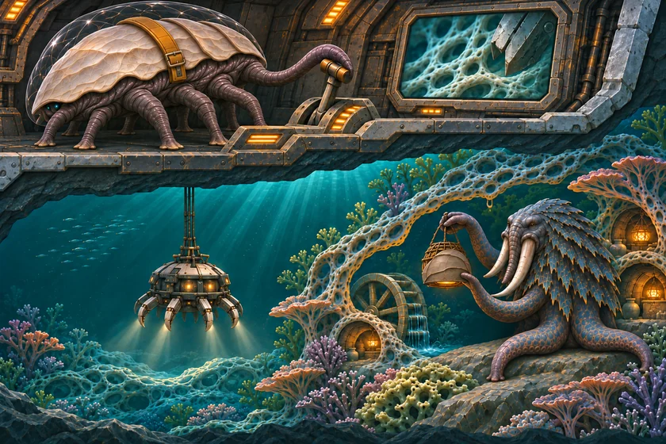

THE ORUUN · FROM ABOVE
The Unmarked Garden
Some reefs carry a pale clamp. The cutters leave those alone.
For two hundred years, the Dryborn have taken from the first alien people humanity will meet. They could have known.
The Dryborn cut the reefs to power the Reach’s gates. They build the network; they own none of it. Their crews mistake Oruun homes and lamps for wild reef life. An early warning was filed away.



Read the words
“We agreed to leave this one,” Marr says. He steers the cutter away from the pale clamp.
The next reef glows too. Marr records healthy growth and no protection mark.
Marr lowers the cutter. Beneath its lights, the lamp’s keeper closes the shade.